#install.packages("pacman")
pacman::p_load(ggplot2, #flexible and professional graphics
dplyr, #data manipulation
tidyr, #data manipulation
ggdist, #visualize distributions
ggridges, #visualize distributions
ggcorrplot, #visualize correlation
colorspace, #provides a range of color palettes
cowplot) #allows us to arrange plots Data Visualization in R
Learning objectives
- Learn the basics of ggplot2 grammar and syntax.
- Create two graphs that will help you understand your covariates and the relationship between them prior to visualizing your occupancy results.
- Create two graphs that will help you visualize the results of an occupancy analysis.
- Customize the
theme()of your graphs. - Export graphs as .jpg, .png, .pdf, using
ggsave()
Note
You will find that we are using the native pipe operator |>. This native pipe is part of base R and has been available since R version 4.1.0 (May 2021). You can choose which pipe to use, either the native pipe |> or the magrittr pipe %>% by going to Tools > Global options > Code.
Introduction
We are going to use the package ggplot2 to create publication ready graphs in r. To begin, we are going to go over a presentation linked below to learn the basic components of ggplot2 and the grammar of graphics. Once we have covered the basics, then we will proceed to the tutorial.
Presentation
Here’s a link to the presentation
Tutorial: Data visualization for an occupancy analysis.
Note
Warning: We pack a lot of information about ggplot into the first graph and it can be overwhelming. The graphs that follow will be easier since you will already be familiar with many of the concepts and we won’t need to explain them as thoroughly.
Let’s begin by loading the packages and data that we are going to be working with. We will load the packages using the pacman package, which will automatically download any libraries used in this tutorial that aren’t already downloaded on your computer. Just make sure to install the pacman package if you haven’t already!
Now let’s load the data that we will be working with.
# Covariates
land_cover <- readr::read_csv('./data/Chicago_NLCD_landcover.csv')| Landcover Covariates | |||||||||
| NLCD landcover classes | |||||||||
| sites | water | lawn_grass | urban | forest | shrub | herbaceous | wetland | ag | |
|---|---|---|---|---|---|---|---|---|---|
| 1 | C04-MBP1 | 0.01 | 0.01 | 0.82 | 0.05 | 0.00 | 0.00 | 0.08 | 0.00 |
| 2 | C05-BEA1 | 0.08 | 0.06 | 0.52 | 0.04 | 0.00 | 0.13 | 0.11 | 0.01 |
| 3 | C05-BMP1 | 0.26 | 0.13 | 0.32 | 0.02 | 0.01 | 0.04 | 0.19 | 0.00 |
| 4 | C05-BMP2 | 0.15 | 0.00 | 0.28 | 0.04 | 0.01 | 0.20 | 0.24 | 0.00 |
| 5 | C05-EGG1 | 0.07 | 0.02 | 0.71 | 0.03 | 0.00 | 0.01 | 0.13 | 0.03 |
| 6..118 | |||||||||
| 119 | S10-LPP0 | 0.12 | 0.03 | 0.19 | 0.05 | 0.00 | 0.05 | 0.49 | 0.06 |
Pre-analysis data visualization: graph 1
First, let’s prepare the data. We want to explore the shape of the data for all our covariates. It’s highly recommended that you do this at first because it will help you understand the way your data is distributed (e.g., if it’s centered around a value, or if there are a lot of zeros (0), etc.)
covariates <- land_cover |>
# select the following columns
select(sites, wetland, ag, urban) |>
# scale the columns 'wetland', 'ag', 'urban'
# mutate() let's us change existing columns or create new ones
# across() is a helper function to include several columns to apply the scale() function to
mutate(across(c('wetland', 'ag', 'urban'), scale)) |>
# mutate_if is a conditional mutate to only transform as vectors all the columns that are numeric
mutate_if(is.numeric, as.vector) |>
# pivot_longer to go from wide data to long data
pivot_longer(cols = c(wetland, ag, urban), # the columns we wish to transform from wide to long
names_to = 'covariate', # the name of the column that will contain wetland, ag, urban
values_to = 'value') |> # the name of column that will have the cell values for each category
# mutate let's us transform the column covariate to a factor
mutate(covariate = factor(covariate))
head(covariates)# A tibble: 6 × 3
sites covariate value
<chr> <fct> <dbl>
1 C04-MBP1 wetland 0.289
2 C04-MBP1 ag -0.435
3 C04-MBP1 urban 0.330
4 C05-BEA1 wetland 0.573
5 C05-BEA1 ag 0.0128
6 C05-BEA1 urban -0.826 Now that our data are prepared, we can graph the covariates that we are interested in (wetland, agriculture, and urbanization) and see how the data are distributed. Remember that we scaled the covariates in the previous step so it makes sense that we can now compare them graphically.
ggplot(data = covariates, #specify our data source
aes(y = covariate, #specify aesthetic mapping by stating we want our covariate categories to be on the y axis
x = value)) #specify we want the covariate value to be on the x axis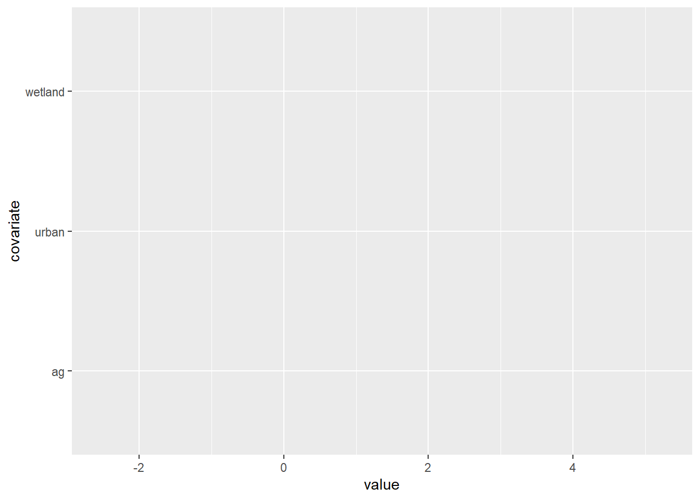
You probably noticed that this chunk of code didn’t actually plot any of our data. That’s because the ggplot(data,aes) argument tells R how to structure our plot and where to look for data, but it doesn’t actually plot any data. This will always be the first line of code when you make a new graph.
To actually plot the data, we need to specify a geom, which tells R how to present the data we specified earlier. Note that while we separate arguments within parentheses using commas, we use a plus sign (+) to join together different pieces of code like geoms, themes, etc.
To see the distribution of our data values, we’re going to use geom_density_ridges2, which tells R to show us our data as a density estimate.
ggplot(data = covariates, #specify our data source
aes(y = covariate, #specify aesthetic mapping by stating we want our covariate categories to be on the y axis
x = value))+ #specify we want the covariate value to be on the x axis
geom_density_ridges2()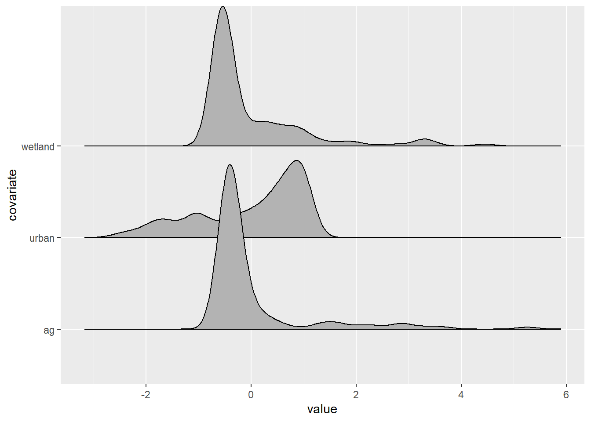
Did you notice that we included parentheses after geom_density_ridges2 but we didn’t put anything inside the parentheses? We can put additional arguments inside the parentheses that control the aesthetics of the plot type. For example, we can scale the height of these density plots to make sure they don’t overlap one another using the scale argument inside the geom_density_ridges2 function.
ggplot(data = covariates, #specify our data source
aes(y = covariate, #specify aesthetic mapping by stating we want our covariate categories to be on the y axis
x = value))+ #specify we want the covariate value to be on the x axis
geom_density_ridges2(scale = 0.7) #reduce the height of each density plot to 70% of its original height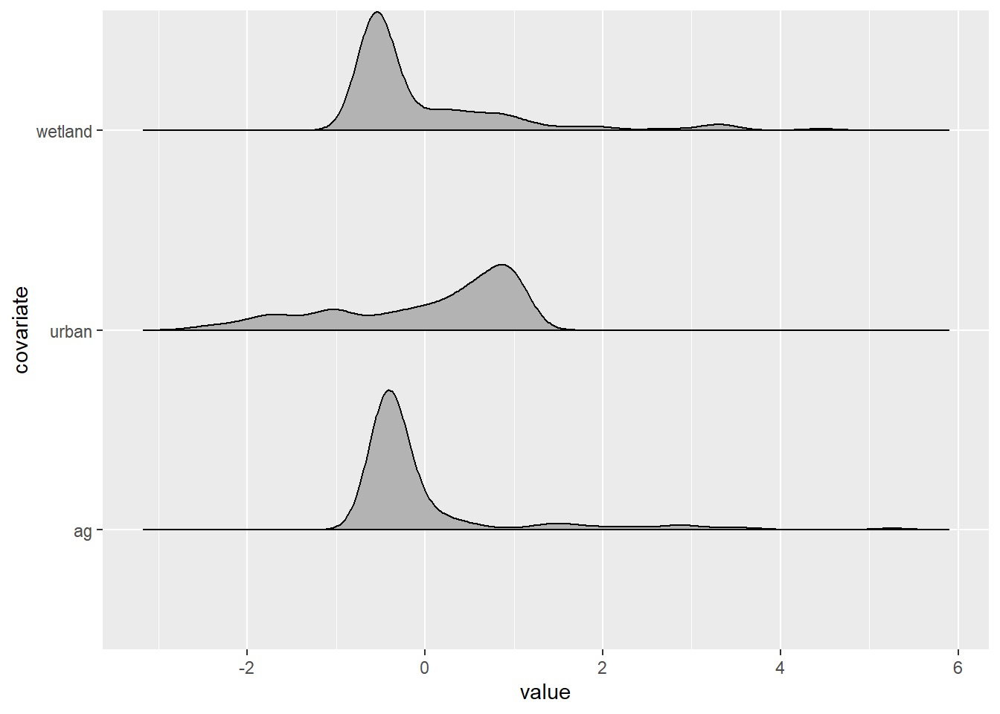
While it’s helpful to see the distribution of our variables, it can be difficult to tell what our mean value is for each variable. We can add the quantile argument to tell R to draw the 25%, 50%, and 75% quantiles to our plot. Alternatively we could use specify different quantiles, such as 2.5% and 97.5%, by using the probs argument: quantile(probs = c(0.025,0.975))
ggplot(data = covariates, #specify our data source
aes(y = covariate, #specify aesthetic mapping by stating we want our covariate categories to be on the y axis
x = value))+ #specify we want the covariate value to be on the x axis
geom_density_ridges2(scale = 0.7, #reduce the height of each density plot to 70% of its original height
quantile_lines = TRUE) #adds quantile lines (default are 25%, 50%, and 75%) Something important to consider is that the density plots are smoothed estimations. That is, we don’t actually have data points for every location depicted in the plot. To provide a more complete visualization of our data, we can add the actual data points to the plot using the jittered_points argument. If used alone, this plots the points within the density plot itself. We can place the points beneath the density plots using the position argument.
ggplot(data = covariates, #specify our data source
aes(y = covariate, #specify aesthetic mapping by stating we want our covariate categories to be on the y axis
x = value))+ #specify we want the covariate value to be on the x axis
geom_density_ridges2(scale = 0.7, #reduce the height of each density plot to 70% of its original height
quantile_lines = TRUE, #adds quantile lines (default are 25%, 50%, and 75%)
jittered_points = TRUE, #adds data points to the plot in a scattered pattern so they don't overlap each other
position = "raincloud") #positions the data points below the density plots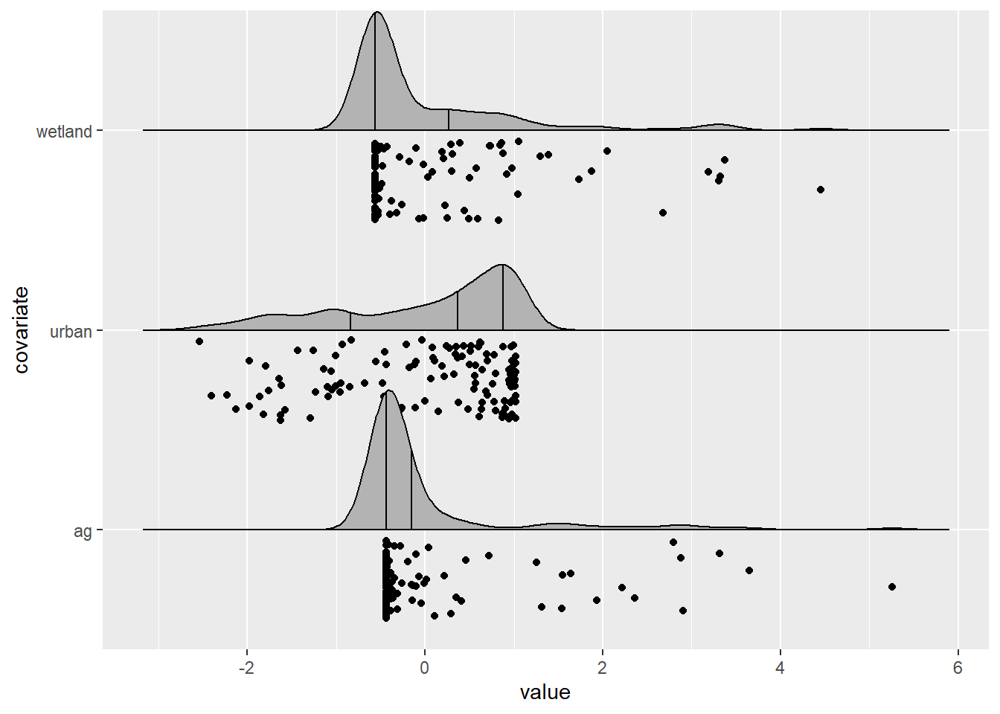
Even when the points are spread out (aka jittered), they still overlap and blend to form a blob in areas of high point density. We can overcome this by adjusting the opacity of our graphic components using the alpha argument, where a value of 1 is completely opaque and a value of 0 is completely transparent.
ggplot(data = covariates, #specify our data source
aes(y = covariate, #specify aesthetic mapping by stating we want our covariate categories to be on the y axis
x = value))+ #specify we want the covariate value to be on the x axis
geom_density_ridges2(scale = 0.7, #reduce the height of each density plot to 70% of its original height
quantile_lines = TRUE, #adds quantile lines (default are 25%, 50%, and 75%)
jittered_points = TRUE, #adds data points to the plot in a scattered pattern so they don't overlap each other
position = "raincloud", #positions the data points below the density plots
alpha = .5) #adjust opacity of figure components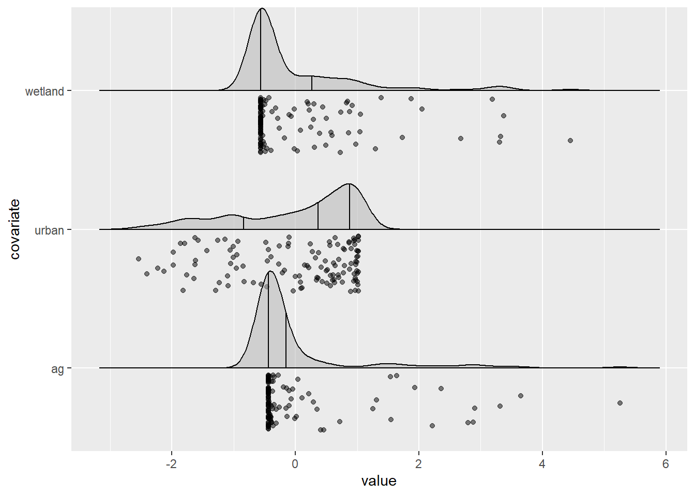
Let’s add some color to our plot! There are actually two main color arguments: color and fill. We use fill to define the color of the inside of an object, such as our density plots. Whereas color changes the color of points and lines, such as the outline of our density plots or the data points plotted below.
ggplot(data = covariates, #specify our data source
aes(y = covariate, #specify aesthetic mapping by stating we want our covariate categories to be on the y axis
x = value))+ #specify we want the covariate value to be on the x axis
geom_density_ridges2(scale = 0.7, #reduce the height of each density plot to 70% of its original height
quantile_lines = TRUE, #adds quantile lines (default are 25%, 50%, and 75%)
jittered_points = TRUE, #adds data points to the plot in a scattered pattern so they don't overlap each other
position = "raincloud", #positions the data points below the density plots
alpha = .5, #adjust opacity of figure components
color = "orange", #control color of lines and points
fill = "blue") #control color of polygons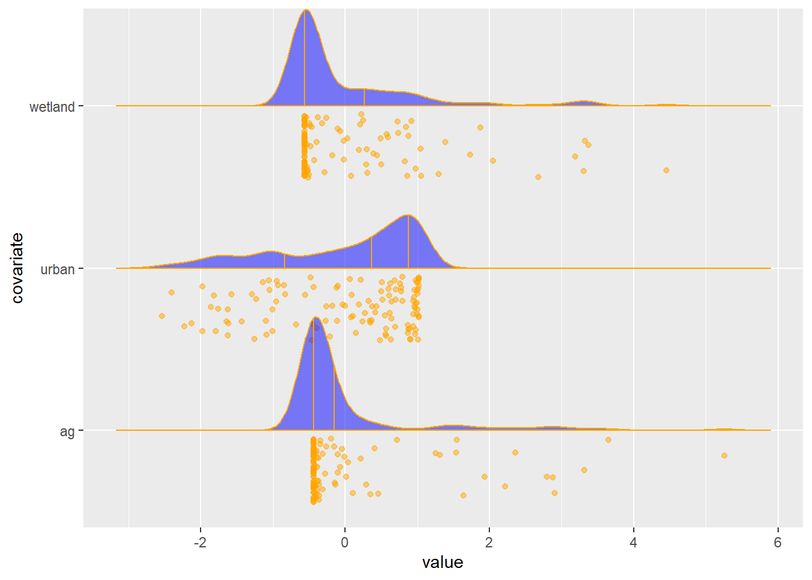
In the last plot, we put both the color and fill arguments within geom_density_ridges2. That told R to use the same color and fill for all three of our variables. If we want to use separate colors for each variable, we have to tell R upfront. To do this, we include color and fill as arguments inside the aesthetic mapping argument (aes()) of our initiating argument (ggplot()).
ggplot(data = covariates, #specify our data source
aes(y = covariate, #specify aesthetic mapping by stating we want our covariate categories to be on the y axis
x = value, #specify we want the covariate value to be
color = covariate, #specify the column on which to base coloration
fill = covariate))+ #specify the column on which to base coloration
geom_density_ridges2(scale = 0.7, #reduce the height of each density plot to 70% of its original height
quantile_lines = TRUE, #adds quantile lines (default are 25%, 50%, and 75%)
jittered_points = TRUE, #adds data points to the plot in a scattered pattern so they don't overlap each other
position = "raincloud", #positions the data points below the density plots
alpha = .5) #adjust opacity of figure components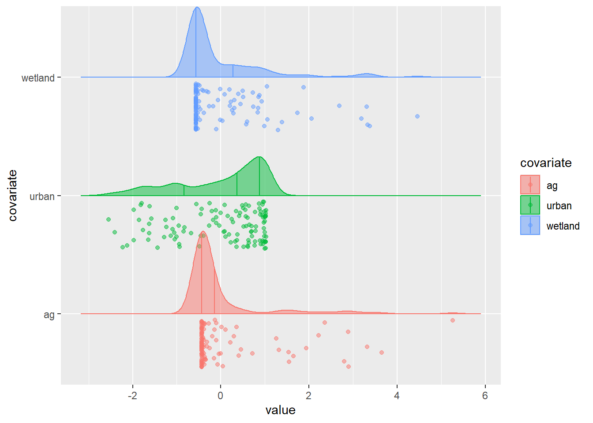
The colors in the previous plot are part of R’s default color palette. This is fine for quick visualizations, but you’ll probably want to choose your own colors. To do this, we use one of the scale commands. Let’s say I want to use the colors of the rainbow. An easy way to do this would be through the scale_fill_manual and scale_color_manual commands, which allow you to set the colors you will use manually.
ggplot(data = covariates, #specify our data source
aes(y = covariate, #specify aesthetic mapping by stating we want our covariate categories to be on the y axis
x = value, #specify we want the covariate value to be
color = covariate, #specify the column on which to base coloration
fill = covariate))+ #specify the column on which to base coloration
geom_density_ridges2(scale = 0.7, #reduce the height of each density plot to 70% of its original height
quantile_lines = TRUE, #adds quantile lines (default are 25%, 50%, and 75%)
jittered_points = TRUE, #adds data points to the plot in a scattered pattern so they don't overlap each other
position = "raincloud", #positions the data points below the density plots
alpha = .5)+ #adjust opacity of figure components
scale_fill_manual(values = c("red","orange","yellow"))+
scale_color_manual(values = c("green","blue","purple"))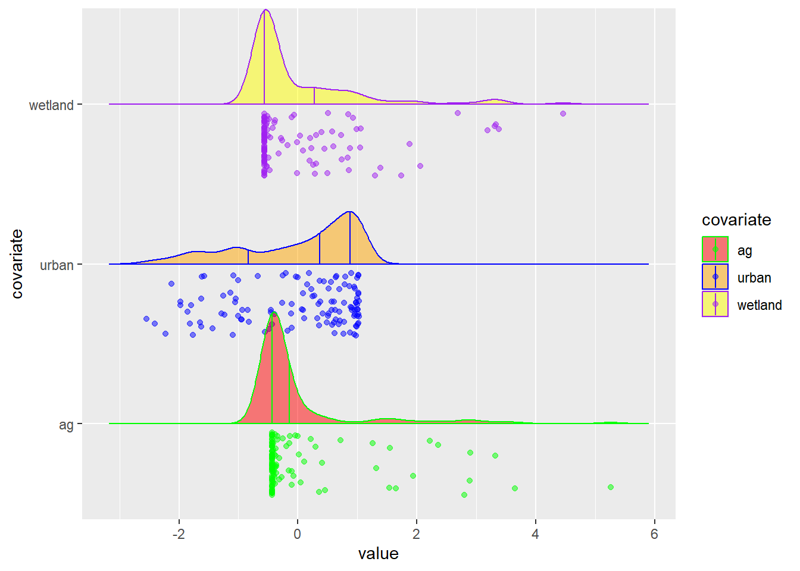
While scale_fill_manual and scale_color_manual offer a lot of flexibility in color choice, it can be irritating (and messy) to have to add this to every graph you make. This becomes especially problematic if you need to alter your color scheme, requiring you to go back and change the code for every single graph. Thankfully, we can avoid this headache altogether by saving our own color palette!
When building a color palette, it’s helpful to know a little bit about color theory. However, it’s not necessary information to complete this tutorial. If you’d like a quick lesson, expand the section below. If not, feel free to skip it!
Color theory
What is color theory?
Color theory is the study of how different colors work together, and how the use of specific colors and color combinations affect the emotions and perceptions of viewers. As researchers, much of our focus is on collecting and analyzing data. But effective selection of color palettes can be just as important as the story we are trying to tell with our data. Understanding the fundamentals of color theory can quickly and painlessly take your data visualization to the next level.
Before we talk about how to pick the best color palette for your data, let’s cover some basic principles of color. When we think of a color, we are often thinking of a hue. Conceptually, hues are raw colors without any alterations. The color wheel below shows twelve familiar hues arranged across the warm-cool spectrum.
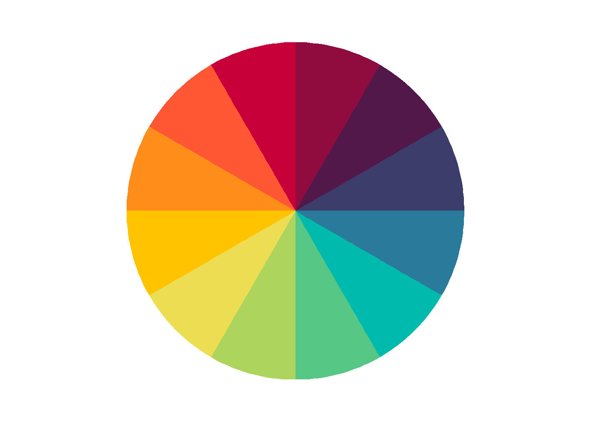
Of course, we can make slightly different colors by “mixing” white, grey, or black with each hue. The new colors are called tints, tones, or shades, respectively.
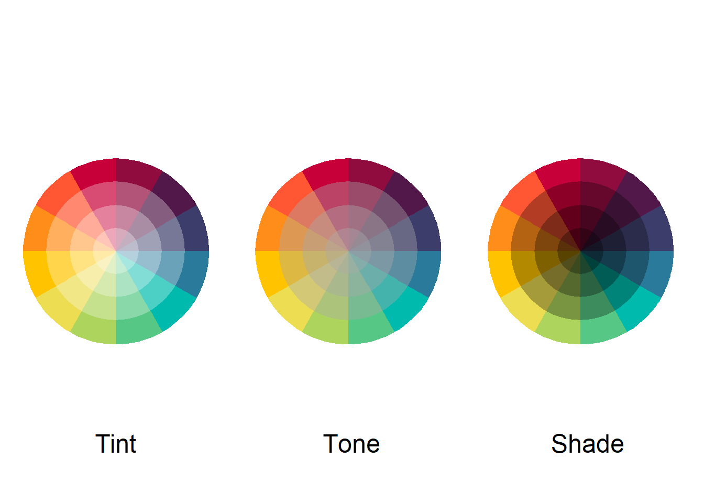
For the rest of this mini-lesson, I’m going to primarily use hues. But be aware that we often rely on tints, tones, and shades to build pleasing and effective color palettes.
While the color wheel’s organization may seem coincidental, it is actually built to allow us to quickly select colors that work well with each other based on their position in the wheel. Depending on what you are trying to communicate, each of these methods of selecting colors has strengths and weaknesses.

Ultimately it is up to you to determine which type of color palette best suits your needs. However, we can broadly lump palettes into two categories: qualitative and quantitative.
Qualitative and Quantitative Palettes
While most of our data will be inherently quantitative, that does not mean our color palettes should be! A quantitative color palette implies meaning from the colors themselves, and especially from the distance (aka similarity) between two colors. Thus, analogous color palettes tend to be used in cases where the color of the data itself is meant to communicate meaning. Non-analogous palettes, on the other hand, simply imply that datapoints (or features, or objects, etc.) are distinct from one another. In other words, qualitative color palettes are primarily aesthetic while quantitative palettes have inherent meaning. Consider the plots below. Without knowing what the plots are depicting, can you intuit the story that is being told? Do the stories differ based on the color palette that is used?
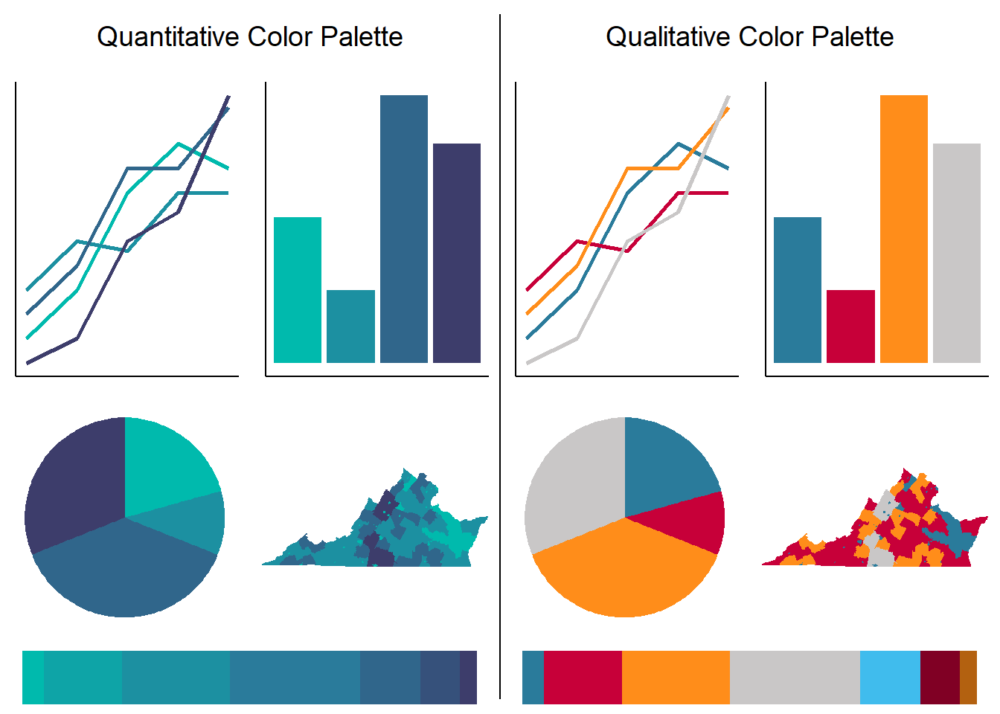
Let’s work our way around the plot clockwise starting with the line graph.
1. Line graphs: Both color palettes work for this figure, but the qualitative palette works better since none of the colors blend with the others. In other words, your eye can easily track all of the lines seperately, whereas they blend together when using the quantitative palette.
2. Bar graphs: Again, both work (and are aethetically pleasing) in this case. Be careful, however. If you present this at a conference using the quantitative palette and someone asks you “what’s going on with the blue bar?” would you know which bar they were talking about? If you used the qualitative palette, you would know which bar they were refering to with complete certainty.
3. Maps: These two maps show the counties of Virginia. The colors indicate the area of the county. In the quantitative palette, you can correctly see that counties in the middle of the state (dark) are the largest, while the counties in northeastern portion of the state (light) are smaller. Our brains tend to assume that dark is equal to heavy and large when it comes to data, while light is equal to small. In this case, the colors corroborate that assumption and we can easily (and correctly) read this map. The map using qualitative colors, however, draw your eye to that northeastern pocket and obscure our central counties. More importantly, we have no idea what the relative difference is between each county because the color scale is not continuous. In short, it is much easier to read a trend when the quantitative palette is used rather than the qualitative palette.
4. Likert plots: The Likert scale runs from one to seven and asks people to rank how much they agree with a statement. Likert scores, as well as any other ranking system, yield data with an inherent order. As a result, the qualitative palette is once again more intuitive than the qualitative palette.
5. Pie charts: In general, it’s best practice not to use a pie chart to visualize your data since humans have a difficult time discerning area of circles. Here, the pie charts use the exact same data as the bar graphs. It is generally easier for people to see the difference between the larger two bars in the graph than it is for people to see the difference between the larger two slices of pie. Regardless, this is an instance where qualitative colors do a better job than quantitative colors since pie charts break data up by categories. There is (presumably) no inherent relationship beween categories, and thus our use of color is primarily to differentiate categories rather than imply a relationship between them.
Mixing Qualitative and Quantitative Palettes
There are some instance where using both types of palettes makes sense. In the last section, we discussed how the colors in a pie chart are mean to primarily separate data groups rather than imply a relationship between them. However, if you have sub-categories of data, you may wish to use colors to imply that each of those subcategories has a relationship to the larger category. In this instance, you can use a qualitative palette for the major categories, but quantitative palettes based off the qualitative colors to further separate data. For instance, the example below shows three subgroups in the blue category, two in the red, etc.
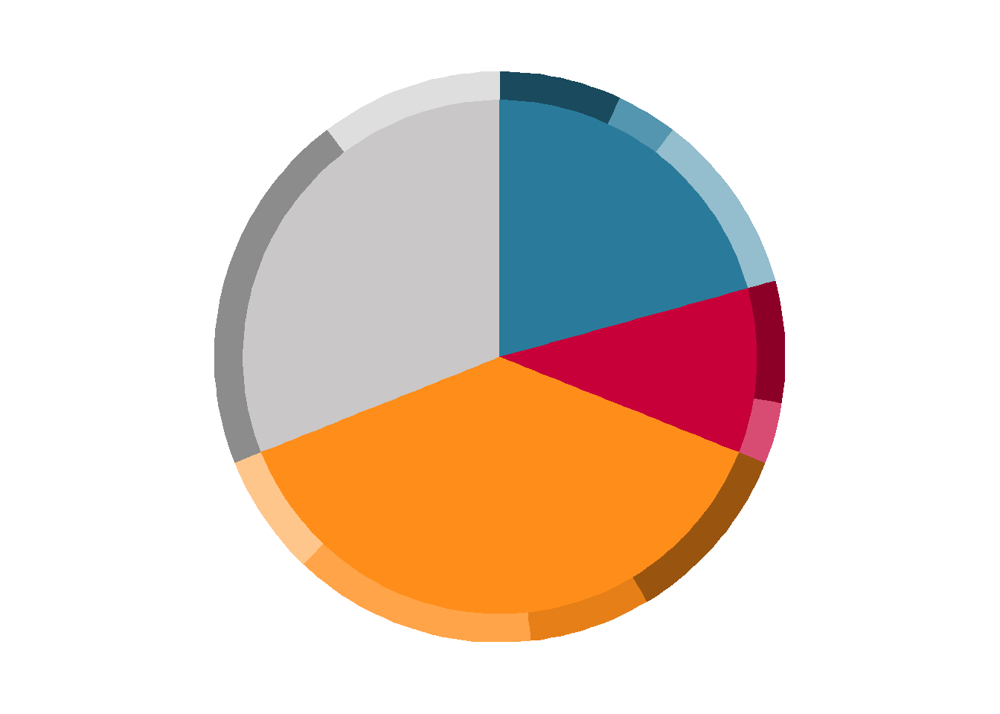
You may also want to use color to highlight one particular aspect of your data. In that case, you can use a subtle quantitative palette to mute the background data, while pulling an accent color from a qualitative palette to highlight your main finding.

In the end, relying on color theory can help you make effective visualizations that correctly communicate your findings. But remember, these are just suggestions. Sometimes it’s okay to bend the rules! Also, if you don’t have time to create your own custom palette using color theory, feel free to use one of the tried-and-true pre-made palettes available in packages like viridis or colorspace.
We are going to be using color to differentiate categories so we will create a qualitative color palette. You could also use a predefined color palette from packages like viridis or colorspace.
Previously, we simply used the name of a color in quotes. R recognizes 657 color names, so we’re not short on color choices. But we retain more control of our color choices if we use A HEX code instead. HEX codes are simply special codes for a specific color. This approach gives us a lot more flexibility than simply writing “blue.” If you need help translating a color into a HEX code, Google has a built in color picker that allows you to select a color from a map and copy the HEX code.
my_colors <- c('#222f5b', '#5d5d5d', '#946b2d', '#4f3b3b') #create a vector containing our specified colorsNow instead of typing out a vector of colors, we simply provide our named color vector to scale_fill_manual or scale_color_manual.
ggplot(data = covariates, #specify our data source
aes(y = covariate, #specify aesthetic mapping by stating we want our covariate categories to be on the y axis
x = value, #specify we want the covariate value to be
color = covariate, #specify the column on which to base coloration
fill = covariate))+ #specify the column on which to base coloration
geom_density_ridges2(scale = 0.7, #reduce the height of each density plot to 70% of its original height
quantile_lines = TRUE, #adds quantile lines (default are 25%, 50%, and 75%)
jittered_points = TRUE, #adds data points to the plot in a scattered pattern so they don't overlap each other
position = "raincloud", #positions the data points below the density plots
alpha = .5)+ #adjust opacity of figure components
scale_fill_manual(values = my_colors)+ #feed R our custom color palette
scale_color_manual(values = my_colors) #feed R our custom color palette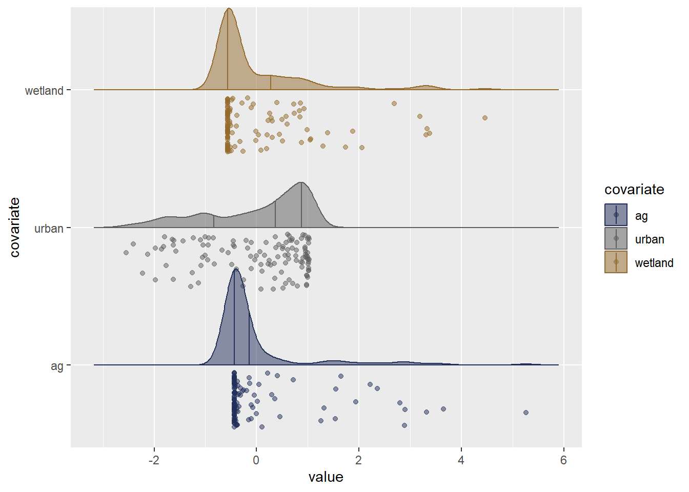
You might have noticed that all of our plots so far have included a grey background with a white grid. You may have also noticed a legend that, although not incorrect, is probably not something you would want to include in a publication.
To remove the background, we will use the theme command, which has a number of arguments that specify how the non-data components of the plot are drawn. We could spend an entire day going over all the components you can adjust via theme. Instead, we’ll cover a few and let you explore the rest on your own. There are also several pre-set themes that you can use and/or tweak. We’ll be building off of theme_classic for our plot.
To change the legend, we use the key_glyph argument inside of our geom. There are also many variations we could discuss here. Instead, we’re just going to show one.
ggplot(data = covariates, #specify our data source
aes(y = covariate, #specify aesthetic mapping by stating we want our covariate categories to be on the y axis
x = value, #specify we want the covariate value to be
color = covariate, #specify the column on which to base coloration
fill = covariate))+ #specify the column on which to base coloration
geom_density_ridges2(scale = 0.7, #reduce the height of each density plot to 70% of its original height
quantile_lines = TRUE, #adds quantile lines (default are 25%, 50%, and 75%)
jittered_points = TRUE, #adds data points to the plot in a scattered pattern so they don't overlap each other
position = "raincloud", #positions the data points below the density plots
alpha = .5, #adjust opacity of figure components
key_glyph = draw_key_polygon
)+ #changes the legend symbol to simply a polygon (box) of color
scale_fill_manual(values = my_colors)+ #feed R our custom color palette
scale_color_manual(values = my_colors)+ #feed R our custom color palette
theme_classic()+ # we are modifying some of the elements of theme_classic. Note that you do not include additional arguments within the parentheses of a pre-set theme!
theme(
panel.background = element_rect(fill = 'white'), #change the background from grey to white (you could also use fill = "transparent")
legend.position = 'bottom', #tells R to put out legend at the bottom of the plot (you could also use legend.position = "none" to remove the legend)
legend.title = element_blank(), #element_blank tells R to ignore this component of the graph.
axis.title.x = element_text(face = 'bold', #makes text of our x axis title bold
size = 14, #adjust size of x axis title
hjust = 0.5, #adjust the horizontal position of x axis title (places it in the middle, or half (.5) way)
margin = margin(t=0.5, #adjust space around text
unit = 'cm')), #specify unit of value provided above
axis.title.y = element_text(face = 'bold', #makes text of our y axis title bold
size = 14, #adjust size of y axis title
hjust = 0.5, #adjust the horizontal position of x axis title (places it in the middle, or half (.5) way)
angle = 90, #orients y axis title at a 90 degree angle so it runs paralell to the axis
margin = margin(r=0.5, #adjust space around text
unit = 'cm')),#specify unit of value provided above
axis.text = element_text(size = 12), #adjust size of text of actual values (covariates and numbers)
plot.margin = margin(0.5, 0.5, 0.5, 0.5, unit = 'cm'), #adjust white space around the plot
legend.text = element_text(size = 12) #adjust text size of the legend (aka key)
)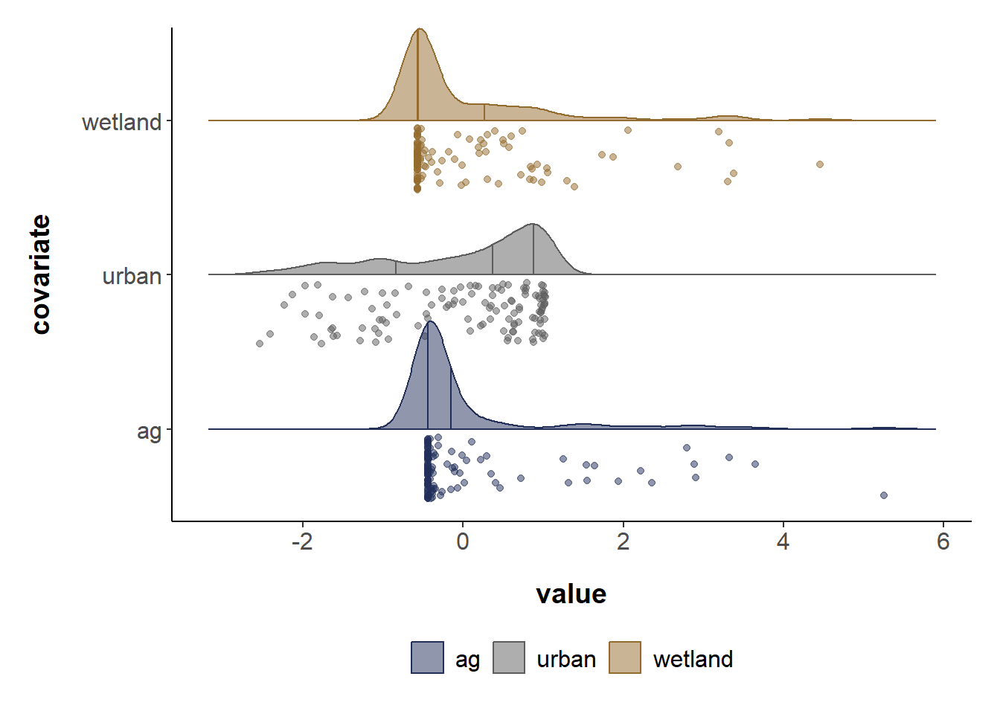
Correlation plot: graph 2
Now that we know the distribution of our covariates, we also have to know if any of them are correlated. Let’s create a plot that visualizes the Pearson correlation coefficients.
First, we’ll create a correlation matrix using the cor function.
cor_mat <- cor(land_cover[,c("ag", "urban", "wetland")]) #create correlation matrix for our three variables
cor_mat <- round(x = cor_mat,
digits = 2) #round values to 2 decimal places
cor_mat ag urban wetland
ag 1.00 -0.46 0.28
urban -0.46 1.00 -0.72
wetland 0.28 -0.72 1.00Now let’s create our correlation plot. For this graph, we will be using an auxilary package that uses ggplot2 but has its own commands for plotting correlation plot called ggcorrplot.
#Note that we type "ggcorrplot::" before the command so R knows that our command is from a specific package. This is not always needed, but good practice.
ggcorrplot::ggcorrplot(cor_mat) #feed our correlation matrix to the plot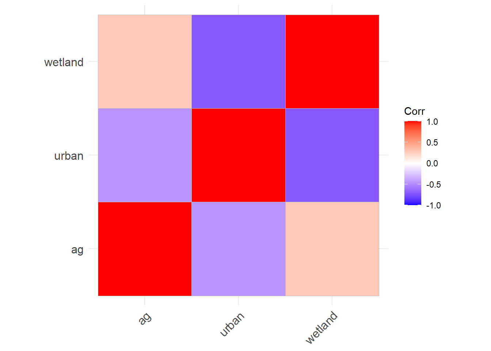
Since we only specified our data, but not any additional arguments, the above plot used the default settings for this type of plot. Under the default settings, we can see that warmer colors indicate strong positive correlation between variables (correlation coeficients closer to 1), whereas cooler colors indicate strong negative correlation between variables (correlation coeficients closer to -1). White indicates no correlation exists between two variables.
Generally when we are looking into correlation we want to flag any pair of variables with a correlation coefficient above a pre-determined threshold (usually 0.7). Unfortunately most of us aren’t able to exactly match the color of a square to its position in the legend. Instead, we can add labels to the plot so our eyes quickly can scan for colors that indicate we are approaching our threshold, then read the exact correlation coefficients for those pairs of covariates.
ggcorrplot::ggcorrplot(cor_mat,#specify our data
lab = TRUE, #tell R to include the correlation coefficient (as a label)
lab_col = "black", #specify the color of our labels
lab_size = 6) #specify the text size of our labelsYou may have noticed that the upper left half of the plot is exactly the same as the lower right half of the plot. That’s because our variables are arranged in the exact same way on both the x and y axes.
In truth, you will probably never try to publish a correlation plot so if this format works for you, great! But it seeing duplicated information is overwhelming, we can add type = "lower" to reorder the x and y axes. In doing so, we remove the diagonal of perfect correlation, and erase the mirrored halves. Again, this isn’t necessary but can help make interpreting the plot easier.
ggcorrplot::ggcorrplot(cor_mat,#specify our data
lab = TRUE, #tell R to include the correlation coefficient (as a label)
lab_col = "black", #specify the color of our labels
lab_size = 6, #specify the text size of our labels
type = "lower")#re-order x and y axes and remove duplicated information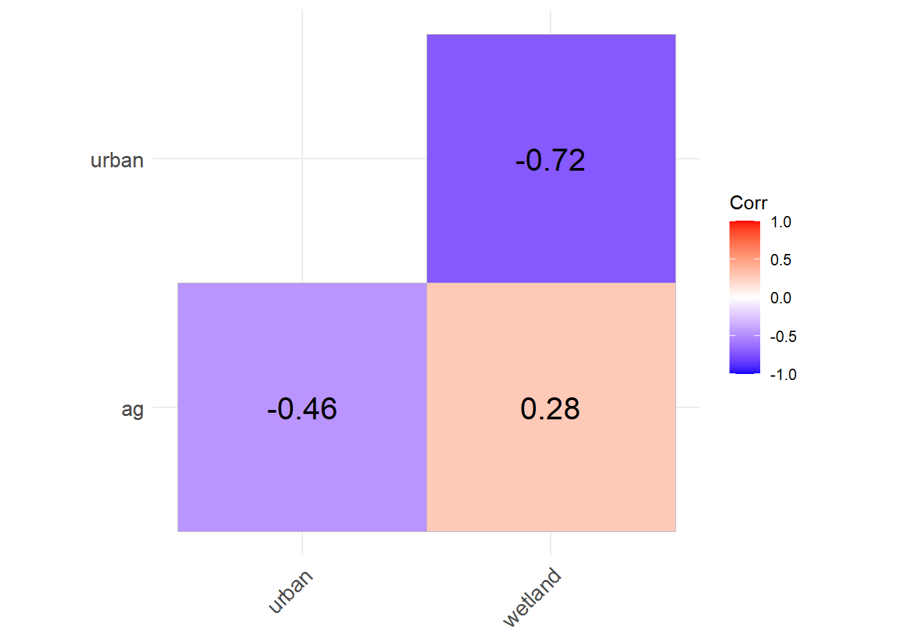
Again, since you will never try to publish this plot, the default colors are probably sufficient. But for the sake of learning, let’s change our color palette.
Several packages offer pre-defined palettes, such as, viridis,paletteer, RColorBrewer, and colorspace. For this example we’re going to work with RColorBrewer. You can explore the 97 palettes offered by colorspace by expanding the section below, or you can trust we’re picking a good palette!
Pre-set color palettes

List of 2
$ aspect.ratio : num 8.08
$ legend.position: chr "none"
- attr(*, "class")= chr [1:2] "theme" "gg"
- attr(*, "complete")= logi FALSE
- attr(*, "validate")= logi TRUEIn this case, we need to use a sequential palette or a diverging palette because we want to highlight extreme values and bring less attention to smaller values.
For this example, we’ll use the diverging color palette ‘Vik’ because it is a standard divergent color palette. This means our correlation plot will have white for values close to 0 (aka non-correlated) and increase in color intensity as correlation increases.
ggcorrplot::ggcorrplot(cor_mat,#specify our data
lab = TRUE, #tell R to include the correlation coefficient (as a label)
lab_col = "black", #specify the color of our labels
lab_size = 6, #specify the text size of our labels
type = "lower")+#re-order x and y axes and remove duplicated information
scale_fill_continuous_diverging(palette = "Vik") #specify color palette from colorspace on a continuous gradient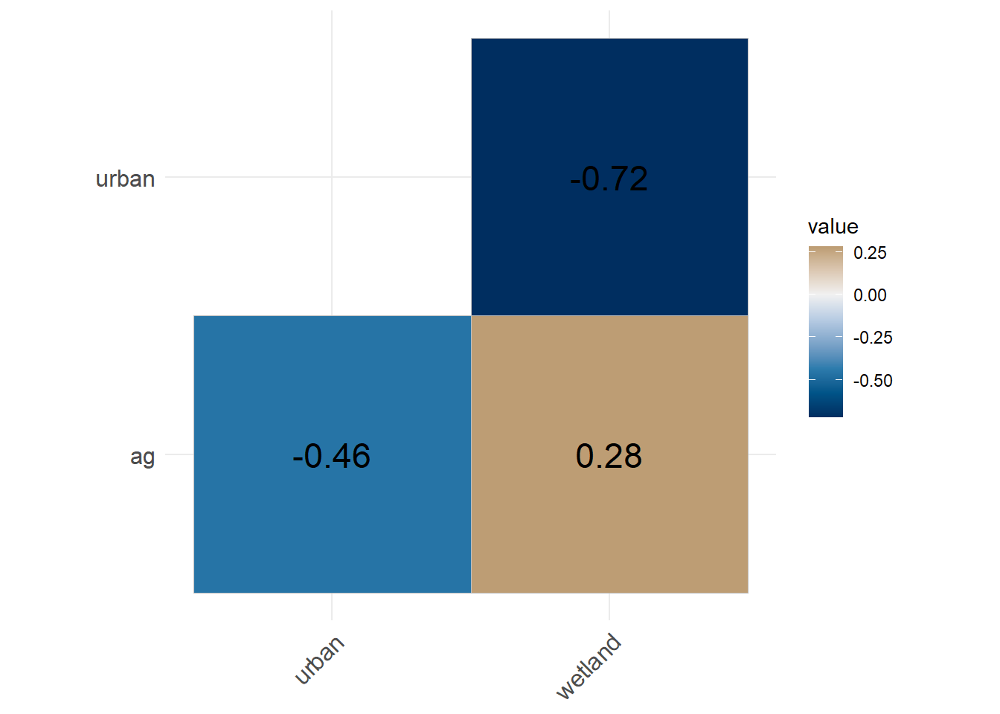
Alternatively, we could build our own color palette creating a named vector of colors which represent our extreme, low, and opposite extreme values.
my_ramp <- c('#bf0d3e', 'white' , '#16537e')
ggcorrplot::ggcorrplot(cor_mat,#specify our data
lab = TRUE, #tell R to include the correlation coefficient (as a label)
lab_col = "black", #specify the color of our labels
lab_size = 6, #specify the text size of our labels
type = "lower",#re-order x and y axes and remove duplicated information
col = my_ramp) #feed R my custom palette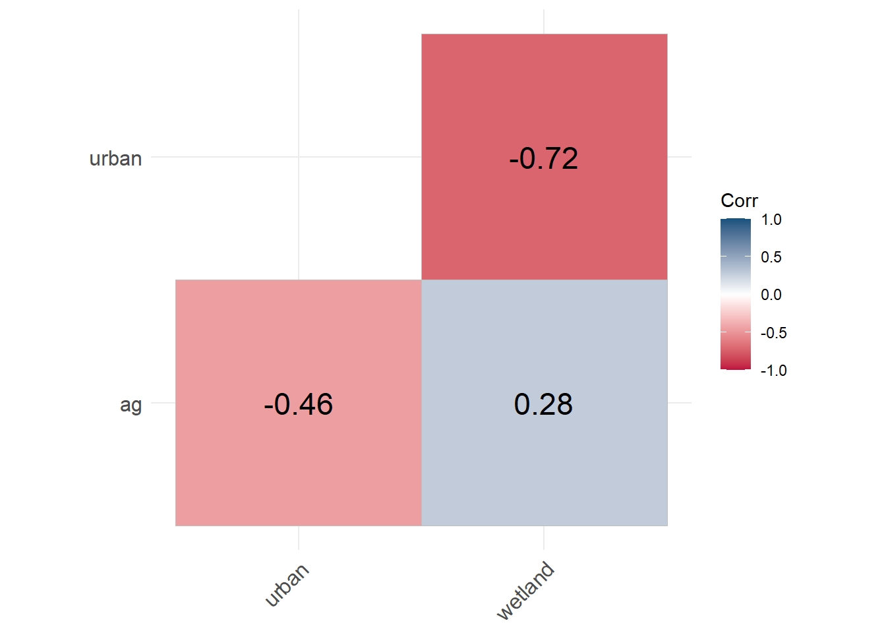
Finally, let’s change a few components of the theme just for practice
ggcorrplot::ggcorrplot(cor_mat,#specify our data
lab = TRUE, #tell R to include the correlation coefficient (as a label)
lab_col = "black", #specify the color of our labels
lab_size = 6, #specify the text size of our labels
type = "lower",#re-order x and y axes and remove duplicated information
col = my_ramp)+ #feed R my custom palette
theme(legend.title = element_text(face = 'bold', #Bold the legend title
hjust = 0.5), #Center legend title: 0=left, 1=right
axis.text.x = element_text(face = 'bold', #Bold the axis text (variable names)
angle = 0, # Control the angle of the x-axis labels so they aren't angled
hjust = 0.5, #Center the x-axis labels: 0=left, 1=right
size = 12, #Font size for x-axis labels
color = "black"), #Color for x-axis labels
axis.text.y = element_text(face='bold',
size = 12,
color = 'black'),
plot.margin = margin(1, 1, 1, 1, unit = 'cm'))+ #Margins around the plot, order is top, right, bottom, left, remember 'trouble'
guides(fill = guide_legend(title = 'Correlation')) #With guides, you can modify the legend title, or else it automatically takes the name of the column 'value'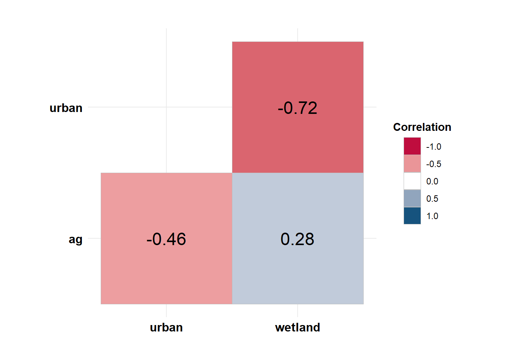
Post-analysis data visualization: prediction plots graph 3
Graphs 1 and 2 were visualizations of raw data that are common to evaluate before fitting a model. Graphs 3 and 4 will now teach you how to visualize the results of your model. For consistency’s sake, we will be using the output from the first occupancy tutorial. We won’t go over or show the code here. Rather, we’re assuming you have the output handy.
We will begin by plotting a response plot, which shows the relationship between the dependent variable and an independent variable. To build this plot, we need to create a prediction data frame that tells us what our dependent variable’s value is over a range of possible independent variable values. Make sure your columns have the same names as the ones you included in your model.
First, let’s explore the range of our covariates, both scaled and non-scaled.
| covariates | min | max |
|---|---|---|
| ag | 0.00 | 0.16 |
| urban | 0.16 | 1.00 |
| wetland | 0.00 | 0.38 |
| ag_scale | -0.35 | 5.30 |
| urban_scale | -2.45 | 0.99 |
| wetland_scale | -0.50 | 3.77 |
Now, we want to use our real values (unscaled) to make to create a sequence of (scaled) values that we can use to make predictions on.
#Specify the range of each our variables (See table above)
ag_range <- c(0, 0.16)
urban_range <- c(0.16, 1)
wetland_range <- c(0, 0.38)
new_df <- data.frame( #Create a prediction data frame
ag_scale = seq(ag_range[1], ag_range[2], length.out = 100), #create 100 agriculture values that range between the smallest and largest values found in our dataset
urban_scale = 0, #Because we are only evaluating the effect of one variable at a time, hold this at zero for all 100 values
wetland_scale = 0 #Because we are only evaluating the effect of one variable at a time, hold this at zero for all 100 values
)
dat_pred <- new_df #Rename our data frame
dat_pred$ag_scale <- (dat_pred$ag_scale - mean(siteCovs_df$ag)) / sd(siteCovs_df$ag) #Scale agriculture values by mean-centering and dividing by the standard deviationNow we are ready to start making predictions with one of our covariates while the other ones remain at 0.
# using the function predict in package unmarked we put our model m1 and
# specify type as state for occupancy. We would use 'det' for detection,
pred_ag <- unmarked::predict(m1, type = 'state', newdata = dat_pred)
# Now with our predicted data frame we will create a new column called ag which
# will have the scaled covariate we want to make predictions with
# then we simply relocate that column to be the first column
pred_ag <- pred_ag |>
mutate(ag = new_df$ag_scale) |>
relocate(ag)
head(pred_ag) ag Predicted SE lower upper
1 0.000000000 0.5854279 0.06678247 0.4515990 0.7077341
2 0.001616162 0.5889485 0.06493721 0.4585662 0.7079310
3 0.003232323 0.5924600 0.06346754 0.4647960 0.7087535
4 0.004848485 0.5959621 0.06239414 0.4702352 0.7102373
5 0.006464646 0.5994544 0.06173126 0.4748441 0.7124050
6 0.008080808 0.6029367 0.06148531 0.4785995 0.7152636Let’s start making plots! We’ll start with plotting the effect of agriculture.
ggplot(pred_ag, #Specify data
aes(x = ag, y = Predicted))+ #Specify aesthetic mapping
geom_line(linewidth = 1, #Specify the width of the line
color = 'black') #Specify the color of the line
We’re off to a good start! Notice that we used a new geom here: geom_line(). While this geom shows us our predicted outcome using a point estimate, it doesn’t show us uncertainty. To add our 95% confidence intervals, we use geom_ribbon(), which is similar to geom_line() but adds a polygon to the plot around the line.
ggplot(pred_ag, #Specify data
aes(x = ag, y = Predicted))+ #Specify aesthetic mapping
geom_line(linewidth = 1, #Specify the width of the line
color = 'black')+ #Specify the color of the line
geom_ribbon(aes(ymin = lower, #Specify the column that holds the lower estimate of our 95%CI
ymax = upper), #Specify the column that holds the upper estimate of our 95%CI
fill = '#B8BADD')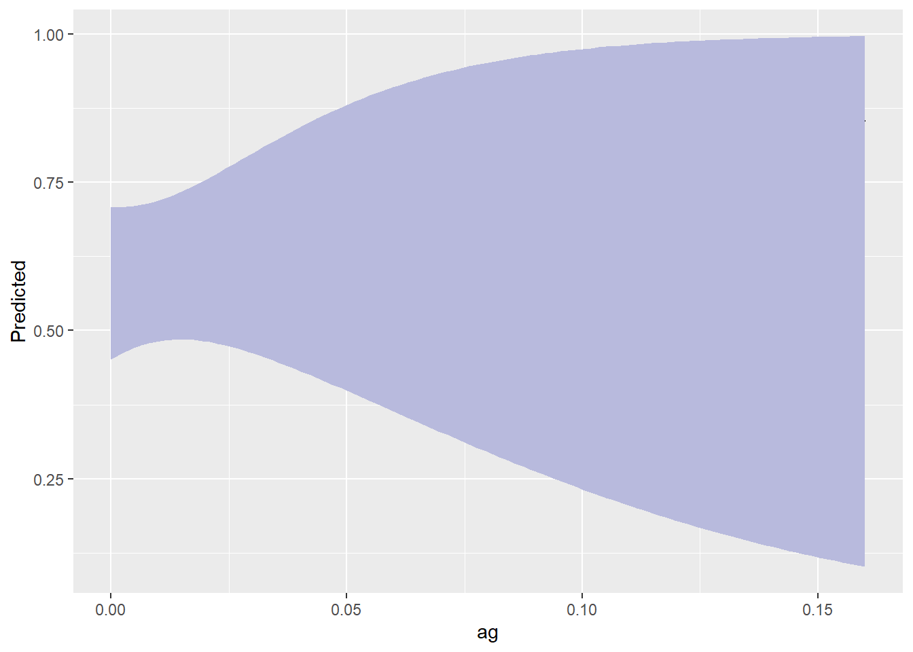
Uh oh…when we added our confidence interval it covered up our line. That’s because order matters for graphical objects only. That means we could specify the theme in the first line of code or the last line of code and it wouldn’t make a difference. But when it comes to objects being plotted within the graph, the first object listed in the code is the first object plotted in the graph. In the last graph, we plotted the line before the ribbon. As a result, the ribbon was placed on top of the line. We can switch this around by re-ordering our code to make the ribbon come first and the line come second.
ggplot(pred_ag, #Specify data
aes(x = ag, y = Predicted))+ #Specify aesthetic mapping
geom_ribbon(aes(ymin = lower, #Specify the column that holds the lower estimate of our 95%CI
ymax = upper), #Specify the column that holds the upper estimate of our 95%CI
fill = '#B8BADD')+
geom_line(linewidth = 1, #Specify the width of the line
color = 'black') #Specify the color of the line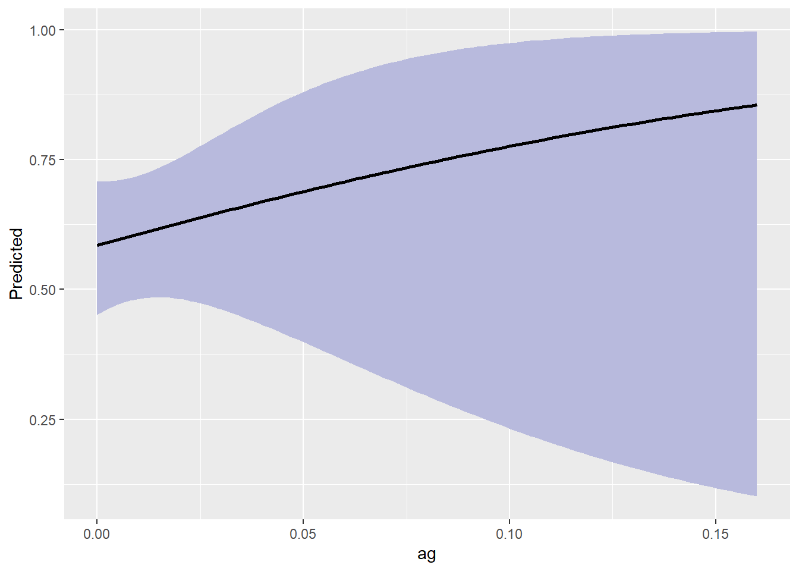
Now that looks better! Now that our graphic objects look good, let’s adjust the axes.
ggplot(pred_ag, #Specify data
aes(x = ag, y = Predicted))+ #Specify aesthetic mapping
geom_ribbon(aes(ymin = lower, #Specify the column that holds the lower estimate of our 95%CI
ymax = upper), #Specify the column that holds the upper estimate of our 95%CI
fill = '#B8BADD')+
geom_line(linewidth = 1, #Specify the width of the line
color = 'black')+ #Specify the color of the line
xlab('Proportion of Agriculture')+ #xlab changes the x-axis title
ylab('Occupancy')+ #ylab changes the x-axis title
scale_y_continuous(limits= c(0,1), #set the y axis to go between zero and one
breaks = seq(0, 1, by =0.2)) #set the y axis to show an axis tick in increments of 0.2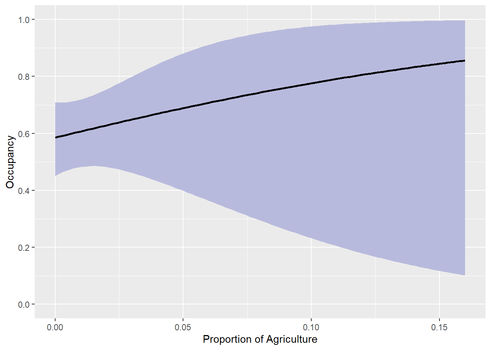
Lastly, let’s adjust our theme. Particularly, let’s get rid of the grey background and add some horizontal lines that will help us see changes on the y axis a bit easier.
ag_plot <- ggplot(pred_ag, #Specify data
aes(x = ag, y = Predicted))+ #Specify aesthetic mapping
geom_ribbon(aes(ymin = lower, #Specify the column that holds the lower estimate of our 95%CI
ymax = upper), #Specify the column that holds the upper estimate of our 95%CI
fill = '#B8BADD')+
geom_line(linewidth = 1, #Specify the width of the line
color = 'black')+ #Specify the color of the line
xlab('Proportion of Agriculture')+ #xlab changes the x-axis title
ylab('Occupancy')+ #ylab changes the x-axis title
scale_y_continuous(limits= c(0,1), #set the y axis to go between zero and one
breaks = seq(0, 1, by =0.2))+ #set the y axis to show an axis tick in increments of 0.2
theme_classic()+ #Let's modify a few elements of theme_classic
theme(
panel.grid.minor.y = element_line(color = 'gray70', #Change the color of the horizontal grid lines on y axis
size = 0.5), #Control the width of the line
panel.grid.major.y = element_line(color = 'gray70', #Change the color of the horizontal grid lines on y axis
size = 0.5), #Control the width of the line
axis.ticks.x = element_line(size = 1), #Change the size (width) of each tick on x-axis (ticks are the small segments on the axis that denote changes in the axis value)
axis.ticks.length.x = unit(0.2, 'cm'), #Change the length of the ticks on x-axis
axis.ticks.y = element_blank(), #Use element_blank to remove tick lines on y-axis
axis.line.x = element_line(size=0.75), #Size (line width) of the x-axis line above the ticks
axis.line.y = element_blank(), #Use element_blank to remove the y-axis line
axis.text.x = element_text(color = 'black', #Control the color of all text (numbers) on the x axis
size = 10, #Control the font size of text on the x axis (note that this does not directly equate to 10-point font in a word processor)
margin = margin(t=0.3, #Use margin(t=) for the x-axis text to change the distance above numbers
unit='cm')), #specify the unit for the above-listed margin size
axis.text.y = element_text(color = 'black', #See comments for x axis
size = 10, margin = margin(r=0.3,
unit='cm')),
axis.title.x = element_text(size = 14, #Adjust font size of x axis title
margin = margin(t=0.7, unit='cm')), #Change white space around the x axis title
axis.title.y = element_text(size = 14, #Adjust font size of y axis title
margin = margin(r=0.7, unit='cm')), #Change white space around the y axis title
plot.caption = element_text(face = 'italic', #Set text in plot caption to be italicized
size = 10, #Set font size
margin = margin(t=1, unit = 'cm')), #Control surrounding white space
# change the outer margin of the plot
plot.margin = margin(0.7,0.7,0.7,0.7, unit='cm') #Control white space around the entire plot
)
ag_plot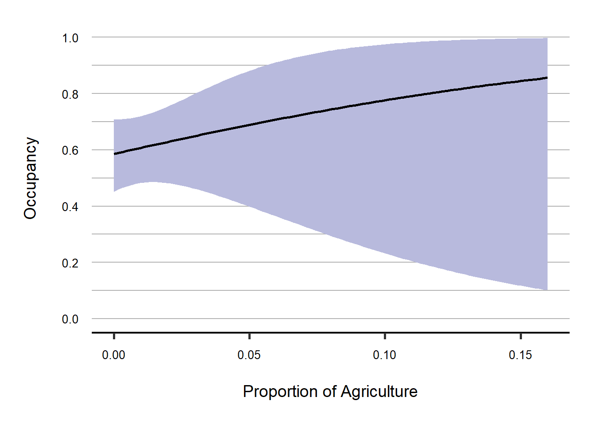
This looks great! A quick note on the horizontal lines behind the plot: theme_classic() removes all gridlines and colored background panels. In this case, we opted to add them back in by using the panel.grid.minor.y and panel.grid.major.yarguments. If you scroll up to look at the grey background in our plot before we adjusted the theme, you’ll notice that the horizontal lines consist of alternating thicker and thinner lines. The difference is subtle, but the thicker lines are the major lines, while the thinner lines are the minor lines. By using the size argument in both panel.grid.minor.y and panel.grid.major.y, we removed this difference and effectively made both types of lines into the same type of line (aesthetically). Despite looking the same, the code requires that we handle them separately.
You may have noticed that we started our code slightly differently this time. Instead of simply writing the code for a plot, we created a named object using the assignment operator. That is, instead of this:
ggplot(data,aes)+
geom()+
theme()we did this:
graph_name <- ggplot(data,aes)+
geom()+
theme()Naming our plot allows us to save it in our environment for later use. One advantage of this is that we can create several plots, then put them together by calling them by name.
For instance, our occupancy model has three variables, but we only made a graph for one of them and called it ag_plot. To show how we would put several plots together, we’ll work with plots for the other two variables called wetland_plot and urban_plot.
To put these three plots together we will use the cowplot package, which allows us to treat the plotting space as a canvas, and each of our graphical objects as components of a collage.
The easiest way to arrange plots is to use the plot_grid function, which arranges your plots automatically.
library(cowplot)
all.plots <- plot_grid(ag_plot,
urban_plot,
wetland_plot,
labels = c('A.', 'B.', 'C.'),
nrow = 1)
all.plots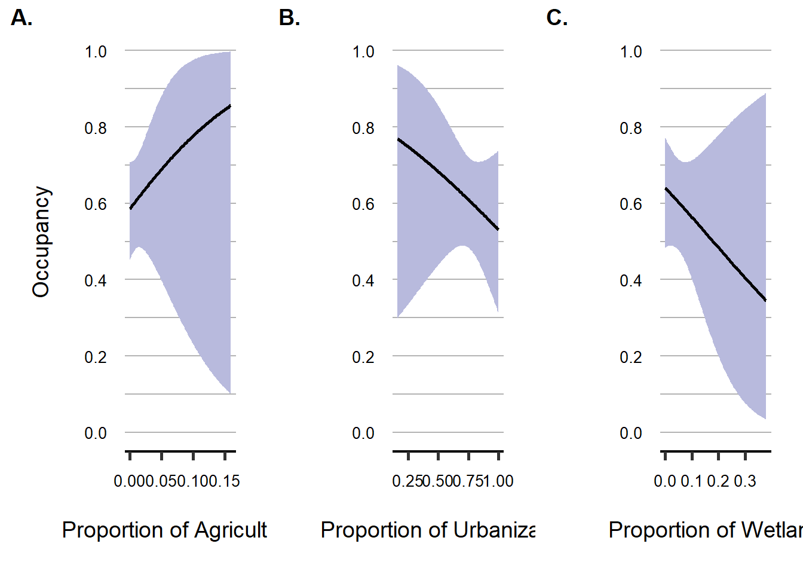
This plot looks terrible because it fits to the screen’s dimensions without considering its own dimensions. Fortunately we can export it and make the resulting image file wider.
ggsave(plot = all.plots, #Specify the (named) plot that you wish to save
filename = './images/all.plots_2.png', #Specify the file path that should be used to save this image (note that "./" is a shortcut that tells R to save the file to your current working directory.)
dpi = 300, #Specify the resolution (dots per linear inch; 300 is the minimum for graphics you wish to publish)
scale = 0.75,
width = 16, #Specify the width of the image
height = 8, #Specify the height of the image
units = 'in') #Specify the units of the previous two arguments
Post-analysis: coefficient plot graph 4
Now we are going to plot the coefficients of our model. For that, we need to extract the coefficient estimates of our model. This is a little tricky because we are dealing with S4 objects (a specific type of data in R) but in the end we will have a nice data frame with our coefficients that we can then put into a nice graph.
summary_m1 <- summary(m1) #Extract coefficient estimates from model m1
Call:
occu(formula = ~1 ~ ag_scale + urban_scale + wetland_scale, data = raccoon_occ)
Occupancy (logit-scale):
Estimate SE z P(>|z|)
(Intercept) 0.433 0.258 1.675 0.0939
ag_scale 0.249 0.365 0.682 0.4950
urban_scale -0.313 0.407 -0.770 0.4412
wetland_scale -0.289 0.371 -0.778 0.4367
Detection (logit-scale):
Estimate SE z P(>|z|)
0.49 0.15 3.26 0.00111
AIC: 362.5905
Number of sites: 67
optim convergence code: 0
optim iterations: 25
Bootstrap iterations: 0 #Create a data frame with three columns (named 'names_', 'estimates' and 'se' where...
model_df <- data.frame(names_ = m1@estimates@estimates$state@estimates, #the names column is the stored name of each variable
estimates = summary_m1$state$Estimate, #the estimates column is the point estimate of each regression coefficient
se = summary_m1$state$SE) |> #the se column is the standard error estimated in the regression process
tibble::rownames_to_column(var = 'names') |> #Move the rownames to a column
select(!names_) |> #We have the names duplicated, let's remove 'names_'
# let's calculate lower and upper 95%CI
mutate(lower = estimates - (se*1.96), #Calculate 95% confidence intervals using the standard error
upper = estimates + (se*1.96)) #Calculate 95% confidence intervals using the standard error
model_df names estimates se lower upper
1 (Intercept) 0.4329113 0.2584263 -0.07360417 0.9394268
2 ag_scale 0.2493874 0.3654457 -0.46688614 0.9656610
3 urban_scale -0.3131325 0.4065844 -1.11003793 0.4837730
4 wetland_scale -0.2886517 0.3710924 -1.01599280 0.4386894What a beautiful data frame! You’ll notice that the first parameter shown is the model intercept. This is obviously an important term in our model, but we generally don’t visualize the intercept unless there’s a specific ecological rationale for doing so. That said, let’s remove it from our data frame.
model_df <- model_df[-(which(model_df$names %in% "(Intercept)")), ] #remove any rows whose value in the "names" column matches "(Intercept)"
model_df names estimates se lower upper
2 ag_scale 0.2493874 0.3654457 -0.4668861 0.9656610
3 urban_scale -0.3131325 0.4065844 -1.1100379 0.4837730
4 wetland_scale -0.2886517 0.3710924 -1.0159928 0.4386894Now that our data frame only contains our parameters of interest, let’s make a nice plot with our point estimates!
ggplot(data = model_df, #Specify data
aes(x = estimates, y = names))+ #Specify our aesthetic mapping (axes)
geom_point(size = 3) #Tell R to plot a point for each estimate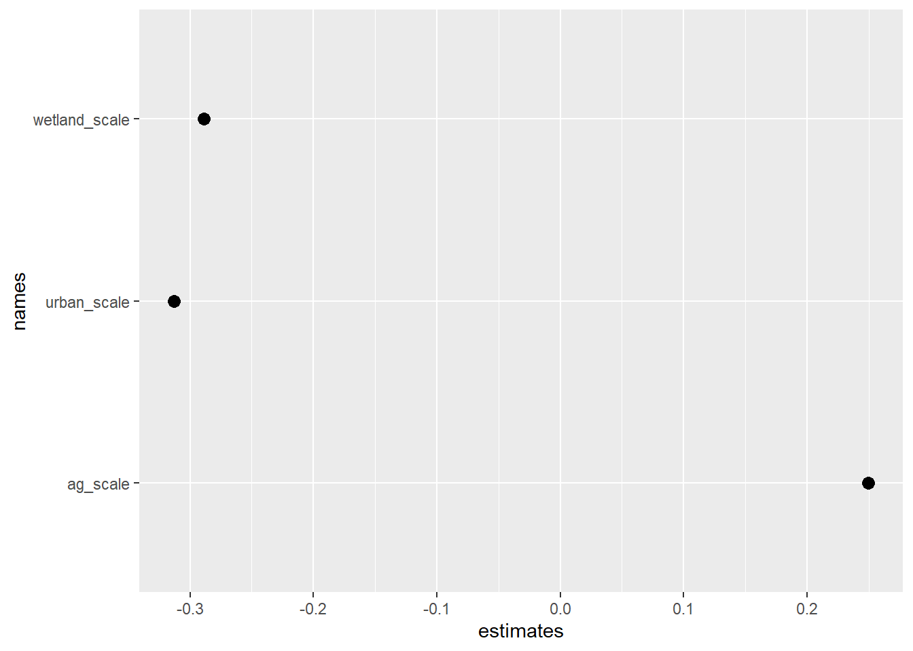
This does a good job showing us how each of our estimates compare to eachother, but the information in this graph is pretty limited without also showing the uncertainty around each estimate. Let’s overcome that by adding our 95% confidence intervals using geom_errorbar().
ggplot(data = model_df, #Specify data
aes(x = estimates, y = names))+ #Specify our aesthetic mapping (axes)
geom_point(size = 3)+ #Tell R to plot a point for each estimate
geom_errorbar(aes(xmin = lower, #Use the value in the column named "lower" as the lower extreme for each error bar
xmax = upper), #Use the value in the column named "upper" as the upper extreme for each error bar
linewidth = 1, #Set the thickness of the error bar line
width = .2) #Set the height of the vertical ticks at the end of each error bar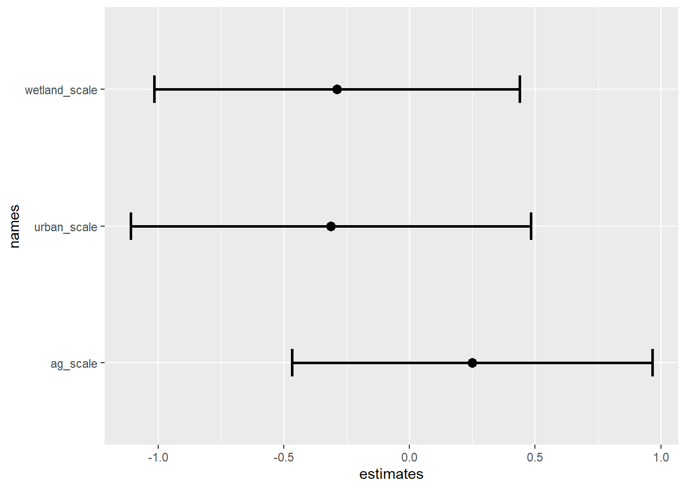
Now let’s tinker with our axis limits and theme to make this a little more polished.
ggplot(data = model_df, #Specify data
aes(x = estimates, y = names))+ #Specify our aesthetic mapping (axes)
geom_point(size = 3)+ #Tell R to plot a point for each estimate
geom_errorbar(aes(xmin = lower, #Use the value in the column named "lower" as the lower extreme for each error bar
xmax = upper), #Use the value in the column named "upper" as the upper extreme for each error bar
linewidth = 1, #Set the thickness of the error bar line
width = .2)+ #Set the height of the vertical ticks at the end of each error bar
xlim(-1.5,1.5)+ #Set lower and upper limits of the x axis
xlab("Estimated Coefficient")+ #Specify the x axis label
ylab("Variable")+ #Specify the y axis label
theme_classic() #specify our desired theme (no need to further adjust, you can simply use a pre-set theme as is if you'd like)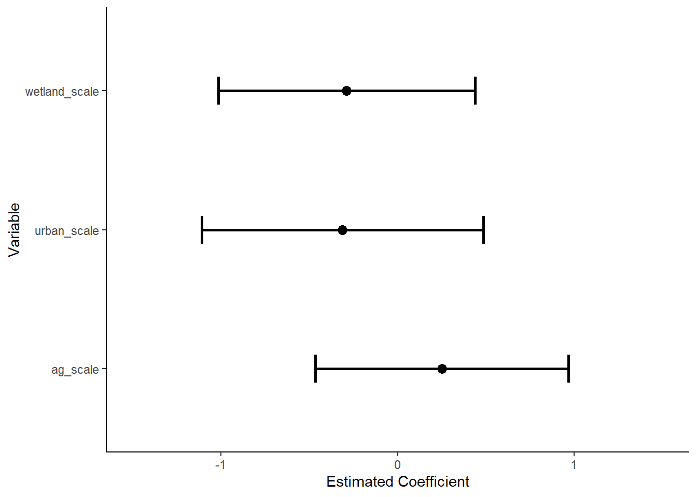
Nice! This gives us a much better understanding of our estiamtes!
As we think about color, it’s worth noting that the color for our points and error bars are controlled seperately even though they look like the same object visually. That said, if you manually specify a color, be sure to inlude the argument within both geom_point and geom_errorbar.
Something else we should consider when thinking about color is what we intend each color to represent. Specifically, are we adding color to help us communicate our message, or to make it look pretty? We should always strive to meet an aesthetic standard when publishing a data visualization, but our message should always be more important than our aesthetics. A good excercise when thinking about color is to ask yourself “how does this help the viewer understand what I’m trying to say?”
With that in mind, although it is tempting to assign each variable a different color, does that add anything to our message? Consider that each variable is already plotted seperately from the others, and has a label. The seperation and label already communicate that each variable is distinct. Adding colors probably won’t add to that message, and might actually detract as the reader tries to understand what the colors mean and how that is different than the seperation already shown by the labels.
If you’re thinking “but wait - the same logic applies to graph 1 but we used different colors there anyway” then you are absolutely right. We probably should have limited our use of color in that graph to reduce the viewer’s mental load. We mostly used color there to illustrate how to assign colors in ggplot2. But have no fear, there are still a couple fun things we can do to make our plot look more appealing without detracting from our message. For instance, we can overlay an additional set of smaller white points on top of our existing plots to make our points look hollow.
ggplot(data = model_df, #Specify data
aes(x = estimates, y = names))+ #Specify our aesthetic mapping (axes)
geom_point(size = 3.5)+ #Tell R to plot a point for each estimate
geom_errorbar(aes(xmin = lower, #Use the value in the column named "lower" as the lower extreme for each error bar
xmax = upper), #Use the value in the column named "upper" as the upper extreme for each error bar
linewidth = 1, #Set the thickness of the error bar line
width = .2)+ #Set the height of the vertical ticks at the end of each error bar
geom_point(size = 2 ,#Tell R to plot a point for each estimate, but make the size smaller than the original points
color = "white")+ #Use a different color to differentiate this point from the origianl points
xlim(-1.5,1.5)+ #Set lower and upper limits of the x axis
xlab("Estimated Coefficient")+ #Specify the x axis label
ylab("Variable")+ #Specify the y axis label
theme_classic() #specify our desired theme (no need to further adjust, you can simply use a pre-set theme as is if you'd like)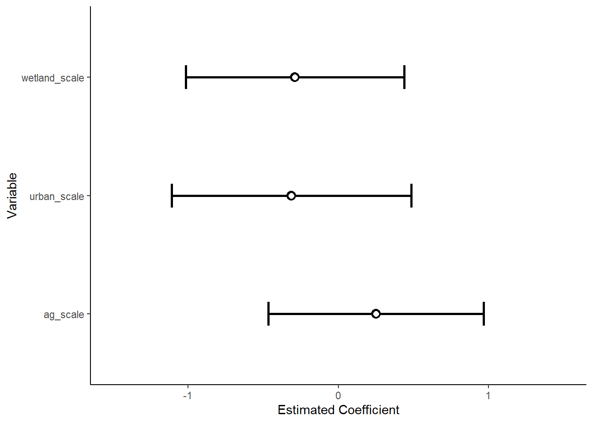
Alternatively, we could change the shape of our points by adding the shape argument to geom_point().
ggplot(data = model_df, #Specify data
aes(x = estimates, y = names))+ #Specify our aesthetic mapping (axes)
geom_point(size = 3.5, #Tell R to plot a point for each estimate
shape = 17)+ #set point shape to a triangle
geom_errorbar(aes(xmin = lower, #Use the value in the column named "lower" as the lower extreme for each error bar
xmax = upper), #Use the value in the column named "upper" as the upper extreme for each error bar
linewidth = 1, #Set the thickness of the error bar line
width = .2)+ #Set the height of the vertical ticks at the end of each error bar
xlim(-1.5,1.5)+ #Set lower and upper limits of the x axis
xlab("Estimated Coefficient")+ #Specify the x axis label
ylab("Variable")+ #Specify the y axis label
theme_classic() #specify our desired theme (no need to further adjust, you can simply use a pre-set theme as is if you'd like)
Again, it wouldn’t be super helpful to use a different shape for each variable. But it might be appropriate to do that in certain circumstances. For example, if we wanted to plot the results from two different species side by side, we could use a different shape to denote each species.
model_df$species <- "raccoon" #specify the species we've been working with
#make up some new data
new.data <- data.frame(names = c("ag_scale","urban_scale","wetland_scale"),
estimates = c(0.65,-0.23,0.9),
se = c(0.12,0.33,0.14))
new.data$lower <- new.data$estimates - (new.data$se*1.96)
new.data$upper <- new.data$estimates + (new.data$se*1.96)
new.data$species <- "bigfoot"
#combine existing data with new data
new.df <- rbind(model_df, new.data)
ggplot(data = new.df, #Specify data
aes(x = estimates, y = names, #Specify our aesthetic mapping (axes)
shape= factor(species)))+
geom_point(size = 3)+ #Tell R to plot a point for each estimate
geom_errorbar(aes(xmin = lower, #Use the value in the column named "lower" as the lower extreme for each error bar
xmax = upper), #Use the value in the column named "upper" as the upper extreme for each error bar
linewidth = 1, #Set the thickness of the error bar line
width = .2)+ #Set the height of the vertical ticks at the end of each error bar
xlim(-1.5,1.5)+ #Set lower and upper limits of the x axis
xlab("Estimated Coefficient")+ #Specify the x axis label
ylab("Variable")+ #Specify the y axis label
theme_classic() #specify our desired theme (no need to further adjust, you can simply use a pre-set theme as is if you'd like)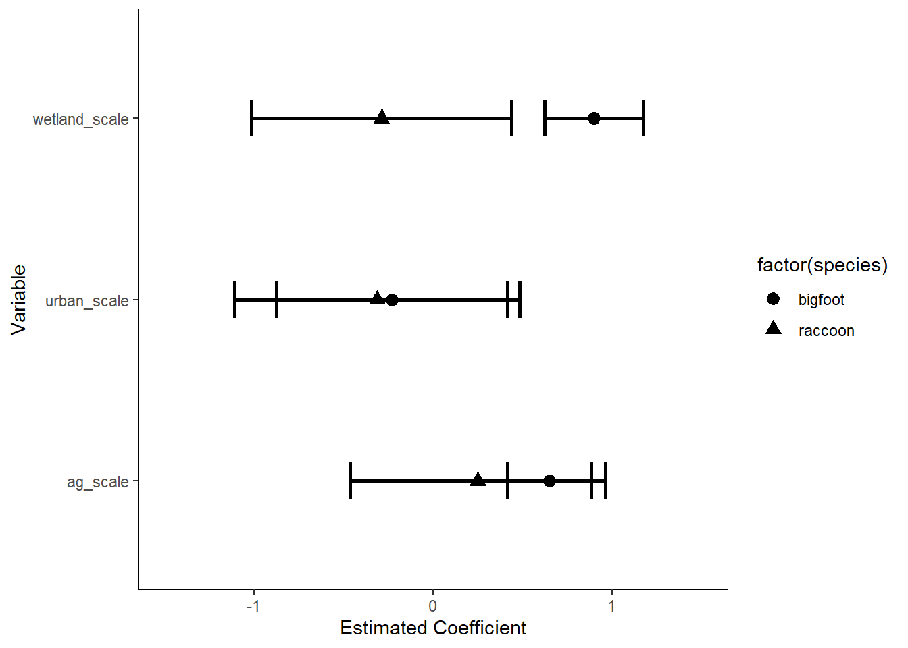
Whoops! In the previous plot we added shape = factor(species) to aes(), which tells R to change the shape based on the value in the “species” column. But because the variables are still the same between the two species, they are plotted along the same axis. As a result, our data are plotted on top of each other and we can’t differentiate the 95% confidence intervals. Let’s fix that by adjusting the position of the points and error bars via the position argument.
ggplot(data = new.df, #Specify data
aes(x = estimates, y = names, #Specify our aesthetic mapping (axes)
shape= factor(species)))+
geom_point(size = 3, #Tell R to plot a point for each estimate
position = position_dodge(0.2))+ #Offset our points so they don't overlap
geom_errorbar(aes(xmin = lower, #Use the value in the column named "lower" as the lower extreme for each error bar
xmax = upper), #Use the value in the column named "upper" as the upper extreme for each error bar
linewidth = 1, #Set the thickness of the error bar line
width = .2, #Set the height of the vertical ticks at the end of each error bar
position = position_dodge(0.2))+ #Offset our error bars so they don't overlap
xlim(-1.5,1.5)+ #Set lower and upper limits of the x axis
xlab("Estimated Coefficient")+ #Specify the x axis label
ylab("Variable")+ #Specify the y axis label
theme_classic() #specify our desired theme (no need to further adjust, you can simply use a pre-set theme as is if you'd like)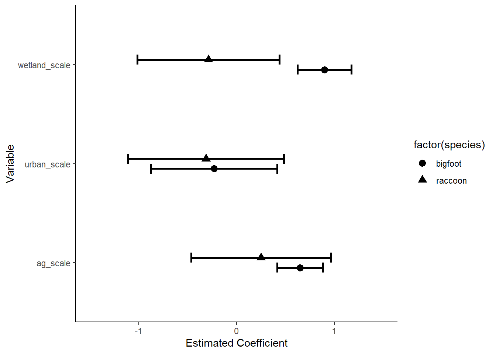
Alternatively, we could use the same point shape for both species and change the color instead. If you’re thinking “but you said not to do that,” you’re absolutely right. When we discussed varying the color earlier, the different colors carried no actual meaning. But in cases like this, different colors mean different species and are thus appropriate. Just note that we swap aes(shape = factor(species)) for aes(color = factor(species)).
ggplot(data = new.df, #Specify data
aes(x = estimates, y = names, #Specify our aesthetic mapping (axes)
color = factor(species)))+
geom_point(size = 3, #Tell R to plot a point for each estimate
position = position_dodge(0.2))+ #Offset our points so they don't overlap
geom_errorbar(aes(xmin = lower, #Use the value in the column named "lower" as the lower extreme for each error bar
xmax = upper), #Use the value in the column named "upper" as the upper extreme for each error bar
linewidth = 1, #Set the thickness of the error bar line
width = .2, #Set the height of the vertical ticks at the end of each error bar
position = position_dodge(0.2))+ #Offset our error bars so they don't overlap
xlim(-1.5,1.5)+ #Set lower and upper limits of the x axis
xlab("Estimated Coefficient")+ #Specify the x axis label
ylab("Variable")+ #Specify the y axis label
theme_classic() #specify our desired theme (no need to further adjust, you can simply use a pre-set theme as is if you'd like)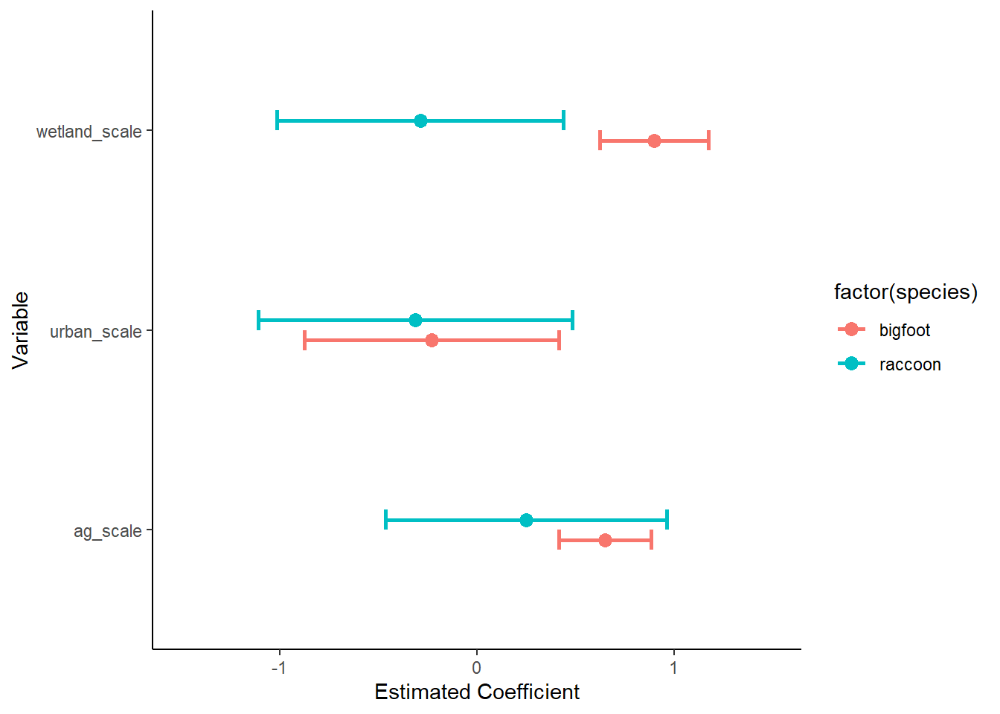
Just like before, R will use its default color palette unless you specify alternate colors. In our final plot, we’ll specify the colors we want using scale_color_manual, give our variables more formal names using scale_y_discrete, and modify our theme to remove the legend title.
point.est_plot <- ggplot(data = new.df, #Specify data
aes(x = estimates, y = names, #Specify our aesthetic mapping (axes)
color = factor(species)))+
geom_point(size = 3, #Tell R to plot a point for each estimate
position = position_dodge(0.2))+ #Offset our points so they don't overlap
geom_errorbar(aes(xmin = lower, #Use the value in the column named "lower" as the lower extreme for each error bar
xmax = upper), #Use the value in the column named "upper" as the upper extreme for each error bar
linewidth = 1, #Set the thickness of the error bar line
width = .2, #Set the height of the vertical ticks at the end of each error bar
position = position_dodge(0.2))+ #Offset our error bars so they don't overlap
scale_color_manual(values = c("cornflowerblue", '#D35C4B'))+ #specify the colors we would like to use
xlim(-1.5,1.5)+ #Set lower and upper limits of the x axis
xlab("Estimated Coefficient")+ #Specify the x axis label
ylab("Variable")+ #Specify the y axis label
scale_y_discrete(labels = c("agriculture","urban","wetland")) + #Supply R with the names we would like to use instead of the column names
theme_classic()+ #specify our desired theme
theme(legend.title = element_blank(),
axis.title = element_text(face = 'bold', size = 14),
axis.text = element_text(size =12)) #element_blank tells R to ignore this component of the graph.)
point.est_plot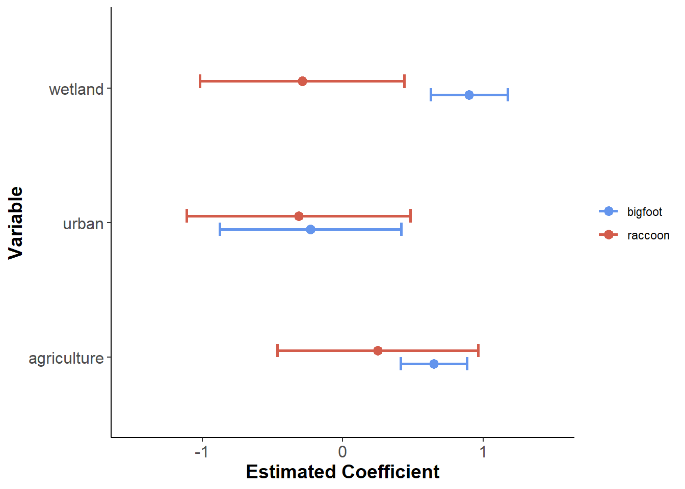
Do you remember how we used the plot_grid() function from the cowplot package earlier? That function is great for automatically arranging plots, but we can exercise more control by using the ggdraw function, which allows us to specify the location of each plot within the larger figure using the draw_plot() function.
Let’s see how this works by manually combining our effect plots and the point estimate plot.
# We already saved our initial plot as all.plots
# now we want to combine all.plots with point.est_plot
# let's save point.est_plot as a plot_grid object to include a label D
d_panel <- plot_grid(
point.est_plot,
labels = c('D')
)
# now let's combine all panels
all_panels <- plot_grid(
all.plots,
d_panel,
nrow = 2, # we want two rows
rel_heights = c(1,1) # both rows have the same height ratio
)
all_panels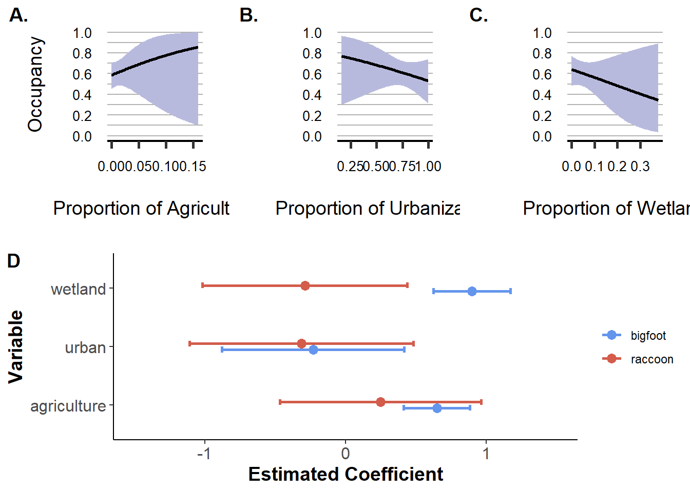
Once again, this plot doesn’t look great since its components are being squeezed into our screen dimensions. We can fix this by saving the plot.
ggsave(plot = all_panels, #Specify the (named) plot that you wish to save
filename = './images/all_panels.png', #Specify the file path that should be used to save this image (note that "./" is a shortcut that tells R to save the file to your current working directory.)
dpi = 300, #Specify the resolution (dots per linear inch; 300 is the minimum for graphics you wish to publish)
scale = 0.65,
width = 14, #Specify the width of the image
height = 14, #Specify the height of the image
units = 'in') #Specify the units of the previous two arguments
Note
Congratulations! You finished the tutorial! Hopefully you feel confident in your new found knowledge and abilities. Now go forth and make beautiful figures!